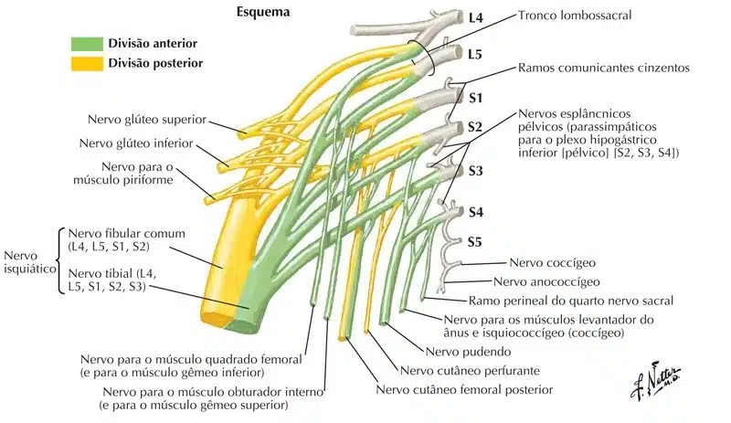
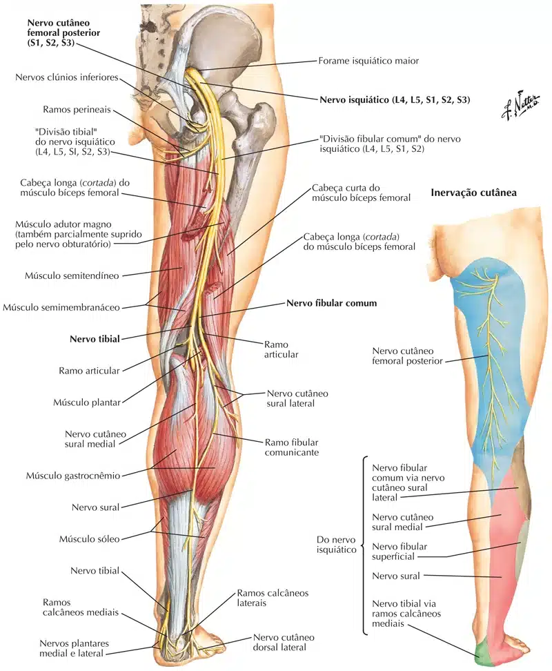
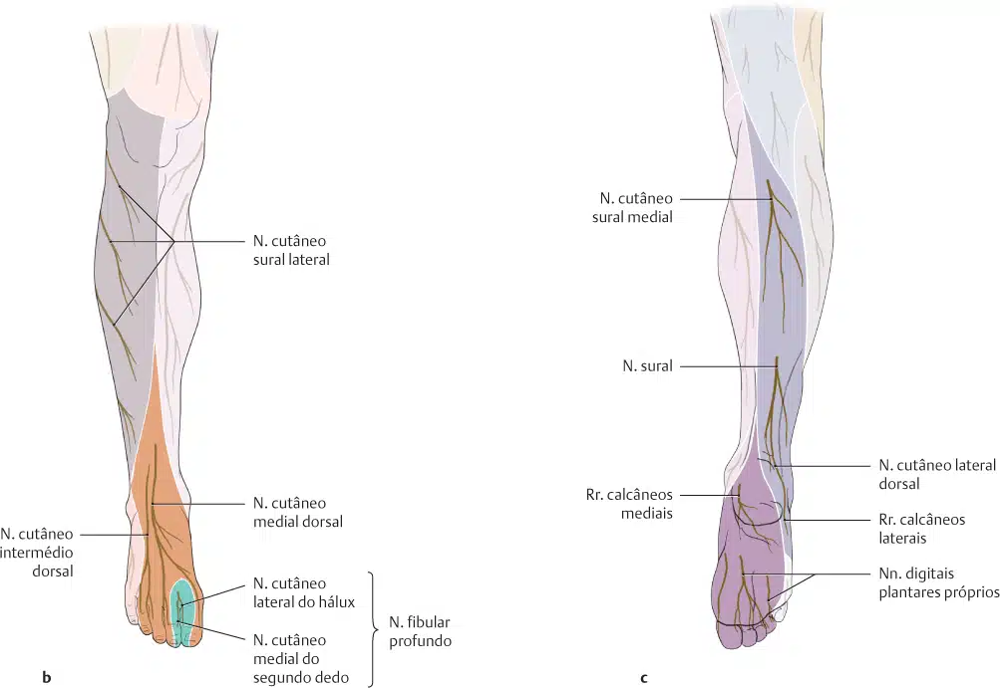

Os nervos do plexo lombar chegam ao membro inferior anteriormente à articulação do quadril e suprem, especialmente, a parede anterior da coxa.
Já, os nervos do plexo sacral seguem posteriormente ao quadril e inervam a parte posterior da coxa, a maior parte da perna e todo o pé.
O plexo sacral está situado na parede póstero-lateral da pelve menor.
Os dois principais nervos originados no plexo sacral, os nervos isquiático e pudendo, situam-se externamente à fáscia parietal da pelve.
A maioria dos ramos do plexo sacral sai da pelve através do forame isquiático maior.
Na margem superior da pelve, a parte descendente do nervo L4 une-se ao ramo anterior do nervo L5 para formar o tronco lombossacral espesso, semelhante a um cordão.
O tronco segue inferiormente, na face anterior da asa do sacro, e se une ao plexo sacral.

O plexo sacral forma cinco nervos que se dirigem para a região glútea, períneo e membros inferiores (sendo que o n. isquiático se divide ainda em outras 2 partes).
O plexo sacral forma os nervos:
1 – Nervo glúteo superior (L4-S1):
Inervação motora: mm. glúteos médio, glúteo mínimo e tensor da fáscia lata.
Inervação sensitiva: não tem.
2 – Nervo glúteo inferior (L5-S2):
Inervação motora: m. glúteo máximo.
Inervação sensitiva: não tem.
3 – Nervo cutâneo femoral posterior (S1-S3):
Inervação motora: não tem.
Inervação sensitiva: pele da face posterior da coxa.
4 – Nervo pudendo (S2-S4):
Inervação motora:
mm. esqueléticos no períneo; esfíncteres externo da uretra e do ânus; m. levantador do ânus.
Inervação sensitiva:
Maior parte da pele do períneo
Pênis e clitóris.
5 – Nervo isquiático (L4-S3): Lembre-se de que este nervo é formado pelas partes do n. tibial e n. fibular comum.
Inervação motora:
semitendíneo (Tib)
semimembranáceo (Tib)
bíceps femoral
Cabeça longa (Tib)
Cabeça curta (Fib)
Parte medial do m. adutor magno (Tib)
Inervação sensitiva: não tem.
Na fossa poplítea o nervo isquiático se divide em nervos: tibial e fibular comum.
5.1 – Nervo fibular comum: se divide em nervos: fibular superficial e fibular profundo.
Inervação motora:
No compartimento post. da coxa: cabeça curta do bíceps femoral
Todos os mm. da perna e do dorso do pé.
Inervação sensitiva: pele anterolateral da perna e na superfície dorsal do pé
O nervo fibular superficial está localizado na parte lateral da perna e supre os músculos fibulares longo e curto.
O nervo fibular profundo desce pela perna na região anterior.
Supre os músculos: extensor longo dos dedos, extensor longo do hálux, tibial anterior, extensor curto dos dedos, extensor curto do hálux e fibular terceiro.
5.2 – Nervo tibial: desce na região profunda e posterior da perna.
Inervação motora:
Todos os mm. no compartimento post. da coxa (exceto a cabeça curta do bíceps femoral)
Todos os mm. do compartimento post. da perna e da planta do pé
Inervação sensitiva: pele nas superfícies póstero-lateral do pé e da planta do pé.

Formado na fossa poplítea por prolongamentos dos nervos tibial e fibular comum.
O nervo sural inerva a pele da face posterior da perna e lateral do pé.
